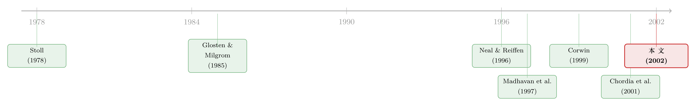

做市商越合并越少，你的成交反而更便宜了——可这真是合并的功劳吗？
本文读的是 Hatch & Johnson (2002, Journal of Financial Economics)：纽约证券交易所的专家做市商 (specialist) 一直在合并，到 2001 年底只剩 8 家。作者用 1994–1998 年间的 7 桩合并，比较合并前后被合并股票的市场质量 (market quality)。结果耐人寻味——被合并的股票确实变得更好成交了，可那些没卷入任何合并的对照股票，也几乎同步地变好了。于是这篇文章最有意思的地方，不是它证明了什么，而是它发现「对照组」本身根本靠不住。
1 引言：一个正在消失的物种
先讲一组数字。Stoll (1985) 数过，纽约证券交易所 (NYSE) 的专家做市商公司，1933 年有 230 家，到 1983 年只剩 59 家。《华尔街日报》接着报道，光是 1987 年 10 月股灾到 1992 年 6 月之间，又有 21 家被吞并。这股潮水一直没退——到 2001 年 12 月，整个交易所只剩下 8 个专家做市单元 (specialist unit)。NYSE 专家协会的一位负责人甚至放话说，再合并到只剩三四家「也还能转得动」。
这是一个正在以肉眼可见的速度消失的物种。
那么问题来了：这件事对你我这样的投资者，到底是好事还是坏事？
像任何行业的并购一样，答案可以是正、是负、也可以是零。往好里说，合并造出了更大、资本更厚、风险更分散的做市单元——它们更不怕波动，更舍得用先进技术，更能摊薄成本；在一个竞争充分的市场里，这些好处最终会以更窄的价差、更深的报价让渡给投资者。往坏里说，合并也可能让做市商坐大，竞争被削弱，于是它有底气抬高交易成本、压低报价深度、甚至在你最需要它接盘的时候袖手旁观；更别说还有一种隐忧——一家巨无霸做市商一旦倒下，可能引发全市场的系统性风险 (systemic risk)，这正是 NYSE 在 2000 年 10 月把专家资本金要求改成「市场份额越大、要求越高」的原因。
正负两股力量同时存在。所以这不是一个能靠直觉拍板的问题，而是一个必须用数据去量的问题。Hatch 和 Johnson 想做的，就是把这把尺子立起来。
2 先把「市场质量」拆开
要量「合并有没有让市场变坏」，得先说清楚「市场质量」到底是什么。这篇文章聪明的地方在于，它没有把市场质量当成一个笼统的好坏判断，而是顺着微观结构理论，把它拆成了一串可以分别测量的维度。
最核心的一块，是 买卖价差 (bid–ask spread)。从 Stoll (1978)、Glosten & Milgrom (1985) 一脉的理论里我们知道，专家做市商报出的这个价差，要同时覆盖三种成本：订单处理成本 (order processing cost)、库存管理成本 (inventory management cost)，以及 逆向选择成本 (adverse selection cost)。前两者合在一起，加上做市商自己的利润，构成所谓的「做市商成本」(dealer cost)；后者则是为了防备那些「比你懂得多」的知情交易者而收的保费。
接着，一个自然的问题是：合并会怎样动这三块成本？
理论给出的方向并不一致，这正是全篇张力的来源——
- 订单处理成本：合并若能带来规模经济和技术升级，这块应该下降。新闻里小做市商哭穷的理由之一，恰恰是「升级系统太贵，我这种小体量摊不起」。
- 库存管理成本：Stoll (1978)、Ho & Stoll (1981) 的库存模型说，价差随做市商的风险厌恶上升、随其财富下降。合并造出资本更厚、更分散的大公司，风险厌恶应该降，这块也该降。但 O'Hara & Oldfield (1986) 提醒：风险厌恶下降，价差未必单调下降，可升可降。
- 逆向选择成本：这块最微妙。理论上它不直接取决于做市商的技术或财富。但如果做市商是「靠常年盯一只股票练出了识别知情订单的手艺」，那么合并后换了人来盯盘，手艺可能断档，逆向选择成本反而上升。Coughenour & Deli (2002) 还补了一刀：股权越分散的做市商，越没动力去识别知情订单——小公司被大公司吞掉，往往就是从「老板自己的钱押在里面」变成「股权摊薄」，这又是逆向选择成本可能上升的一条理由。
除了价差，作者还盯住了几个非价差维度：报价深度 (quoted depth)、价格稳定性 (price stability)、价格连续性 (price continuity)、专家参与率 (specialist participation)、NYSE 在该股全部成交中的市场份额、以及开盘时的成交量。这些都是 NYSE 自己用来考核专家做市商的指标。逻辑是：如果合并真造出了更强的做市单元，它该吸引来更大份额的大宗交易、维持更好的价格连续性、在开盘时敢于用更厚的资本去发现一个更有效率的开盘价（这一点呼应 Madhavan & Panchapagesan, 2000 的发现）。
做市商怎么在价差里同时藏进库存成本和逆向选择成本，是一整套漂亮的理论。关于库存这一维度怎样被定价成一份「到期日不确定的期权」，可参见《做市商的价差里，藏着一份「到期日不确定」的期权》。
3 识别策略：一桩「看似干净」的准自然实验
把维度拆好之后，真正关键的一步，是怎么把「合并的因果效应」从「市场大势」里剥出来。
作者的做法，本质是一个 事件研究 (event study) 加 匹配对照 (matched control) 的组合拳。
第一步，挑出干净的合并事件。 这是全篇最讲究的地方。NYSE 提供了 1993–1999 年专家做市商的组织变更清单。作者只保留那些满足三个条件的合并：(1) 能清楚识别每个做市单元各自做哪些股票；(2) 能精确知道做市责任是哪天交接的；(3) 合并后一年内这家收购方没有再发生别的合并，免得效应互相污染。此外，凡是发生在 1997 年 6 月 24 日 NYSE 把最小报价单位 (tick size) 从八分之一改成十六分之一之前不到六个月的合并，一律剔除——他们不想让 tick size 的改变混进结果里。这一通筛选下来，最终只剩 7 桩合并。样本很小，但每一桩都尽量「干净」。
第二步，划定窗口。 用 NYSE 每月的专家做市商名录，确认每个单元每月做哪些股票。然后把合并日前 6 个月到前 3 个月定为合并前窗口，合并日后 3 个月到后 6 个月定为合并后窗口。两边各砍掉紧贴合并日的 3 个月——为的是避开退出方（被并购的目标公司）业务收尾的混乱，以及收购方接手时换系统、调人手的过渡期。数据来自 NYSE 的 TAQ (Trade and Quote) 库，逐笔成交配上成交时的有效报价，只看 NYSE 自家的成交和报价。为了让参数估得稳，还加了一道活跃度门槛：合并前后每天至少要有 10 笔成交和报价。
第三步，也是这篇文章的灵魂——配一个对照组。 要判断市场质量的变化到底是合并带来的，还是整个市场本来就在变，你必须有一组「没卷入合并、其他方面又跟它像」的股票做参照。作者引 Madhavan (2000) 的结论：买卖价差的差异，最好用成交量、风险、价格、市值这四样来解释。于是对每只被研究的「主体股票」，他们在全部 NYSE 股票里（剔除掉同期卷入合并的）挑一只对照股票，让下面这个量最小：
这就是论文的式 (1)。四项相加，每一项都是「比值偏离 1 的程度」的平方，加总最小的那只股票，就是与主体股票在成交量、价格、市值、波动率上最相像、却没被任何合并碰过的「双胞胎」。每桩合并里，一只股票只能当一次对照；但只要样本期不重叠，它可以在别的合并里再次出场。
估计成本本身，作者用的是 Madhavan, Richardson & Roomans (1997)（下称 MRR 模型）的价差分解框架，把有效价差拆成「做市商成本」和「逆向选择成本」两块；为稳健起见，还另算了已实现价差 (realized spread)、价格冲击 (price impact) 和有效价差 (effective spread)，这套度量沿用 Huang & Stoll (1996) 和 Bessembinder & Kaufman (1997)。
到这一步，设计看起来无懈可击：干净的事件、对称的窗口、四维匹配的对照组。读到这里，你大概以为接下来就是「主体股票变好了、对照股票没动，所以是合并的功劳」这样一个干净的结论。
4 反转：对照组也跟着变好了
然后，反转出现了。
作者确实在主体股票（无论是目标方还是收购方的股票）身上，看到了几处统计上和经济上都显著的变化：合并之后，交易成本下降、价格稳定性改善、专家参与率上升——方向与「合并造出了更强的做市单元」这套理论故事完全吻合。
可问题是，当他们回头去看那些精心匹配、却根本没卷入任何合并的对照股票时，发现这些股票的市场质量改善幅度，大致与主体股票相当。
这一下，干净的因果链就断了。如果连「没被合并」的股票都同步变好了，你凭什么把主体股票的改善记在合并头上？
为什么会这样？作者给的旁证是 Chordia, Roll & Subrahmanyam (2001)：他们记录了 1988–1998 年间一大批 NYSE 股票的报价价差和有效价差呈持续下行趋势——而这个区间，恰好把本文 1994–1998 的样本期整个包了进去。换句话说，那几年整个市场的交易成本本来就在往下走，是一股谁都躲不开的大势。
这是事件研究里最容易被忽视、却最致命的陷阱：你以为对照组替你控制住了市场大势，但如果对照组和处理组面对的是同一股大势，那么「处理组减对照组」这个差分，量出来的就只是噪声，而不是处理效应。
5 真正的贡献：当「对照组」本身就有问题
到这里，故事还可以再翻一层——而这一层，才是这篇文章真正聪明、也真正值得后人借鉴的地方。
朴素的读法是：主体和对照一起变好，说明合并没用，专家做市商合并对市场质量没有影响。但作者明确地说，这个结论未必成立。
原因在于，这个研究里的对照组，从概念上就比一般的事件研究更难解释。逼着主体公司去合并的那些压力——波动率上升、资本金要求提高、技术升级的需求、来自区域交易所和第三市场经纪商 (third market broker-dealer) 的竞争（见 Arnold et al., 1999; Battalio et al., 1997）——同样压在对照公司头上。甚至，合并本身造成的竞争压力，也会外溢到对照公司。
于是对照公司完全可能在没有发生合并的情况下，照样把市场质量做上去。怎么做到的？作者给了两条路：
- 第一，挤出垄断租。 如果 NYSE 上的做市服务市场本来就不是完全竞争的（Cao et al., 1997 记录的「在赚钱股票和亏钱股票之间交叉补贴」正暗示了这种垄断力），那么对照公司哪怕自己的成本结构一点没变，也可以在压力下主动让出一部分垄断利润，让价差变窄。
- 第二，自己升级。 足够大的对照公司，完全可以自己上新技术、压自己的成本。这里有个关键的实证细节：作者发现，作为目标被吞掉的，主要是小做市商；剩下来、对照股票从中抽取的那些没合并的公司，平均个头比退出的目标公司更大。大公司本就更有能力自我升级。
把这两条接上，结论就从「合并没用」翻成了一个完全不同、也乐观得多的判断：只要市场集中度的上升没有削弱竞争、资本金要求又把系统性风险按在可接受的水平，专家做市商合并对市场质量其实是有正面作用的——只不过竞争把这份好处摊给了所有人，连没合并的对照股票都跟着沾了光。
这就是全文反复要讲透的那一个核心：两种解读——「合并无效」和「合并有效但好处外溢」——观测上无法区分，但它们指向同一个落点。无论你信哪一种，都能安心地下一个结论：
专家做市商合并，没有对市场质量造成任何有害的后果。交易成本、报价深度、价格稳定性这些维度，都没有出现对流动性需求者不利的恶化。
一篇本来奔着「证明因果」去的论文，最后老老实实承认自己没能识别出因果——却恰恰是这份诚实，让它得出了一个对监管者、交易所和研究者都站得住脚的政策结论。这是一种很高级的克制。
顺带一提，专家做市商这套「既当裁判又当运动员」的制度，本身就是微观结构研究里一座富矿。关于交易所如何用停牌来「监工」专家做市商，可参见《停牌，原来是交易所给「监工」按下的暂停键》；关于同行业横向并购到底是「把饼做大」还是「抬高价格」的经典之问，可参见《并购是为了把饼做大，还是把价抬高？》。
6 一道额外的保险：选择性偏误
细心的读者会再问一句：被合并的股票，会不会本来就不是随机的一批？比如，会不会正是那些「做市做得差」的股票，才更容易被卷进合并？如果是这样，所谓的「改善」可能只是「均值回归」。
作者也想到了。他们补做了选择性偏误 (selectivity bias) 的检验，思路是 Heckman 式的两阶段：先用一个股票层面的 probit 回归，去预测哪些股票会成为目标方（以及单独预测哪些会成为收购方）。解释变量有两类——两个股票层面的变量（合并前窗口的均成交量和市值），以及五个公司层面的变量（做市商做的股票数、其所做股票的价格加权组合收益波动率、该公司的参与率、稳定率、以及它的 NYSE 市场份额）。
结果（在正文截断处可见的部分）显示：只有公司层面的变量是显著的——也就是说，「哪只股票会被卷进合并」主要由做市商这个机构的特征决定，而不是这只股票自身的微观结构特征。这反过来支持了一件事：把股票按主体/对照分组，并没有埋进一个明显的、与市场质量直接相关的选择机制。
7 文献脉络
把这条线索捋一捋，会看到一幅清楚的演进图。
最早，是把买卖价差理论化的一代人。Stoll (1978) 从做市商提供做市服务的供给侧出发，奠定了库存模型的基础；Amihud & Mendelson (1980)、Ho & Stoll (1981, 1983) 把库存与风险厌恶写进价差；另一支 Glosten & Milgrom (1985)、Copeland & Galai (1983) 则从信息不对称的角度，告诉我们价差里还藏着一块逆向选择成本。这两支合流，才有了「价差 = 订单处理 + 库存 + 逆向选择」的标准三分法。
接着，理论要落地，就需要把价差实证地拆开。Madhavan, Richardson & Roomans (1997) 提供了一个用逐笔成交数据估计价差各成分的框架，Huang & Stoll (1996, 1997) 给了另一套度量。本文用的就是这些工具。
然后，研究的视角从「价差怎么构成」转向「做市商这个机构本身」。Corwin (1999, 2001) 发现不同专家做市商之间，执行成本、流动性、定价效率确有差异；Cao et al. (1997) 揭示了做市商在不同股票间交叉补贴、暗示其存在垄断力；Coughenour & Deli (2002) 则把做市商的组织形式（股权集中还是分散）和它识别知情订单的动机挂上了钩。最直接的前身是 Neal & Reiffen (1996)，他们研究了经纪商收购专家做市单元前后的市场质量，并猜测被收购的单元此前管理低效。

而 Hatch & Johnson (2002) 站在的位置是：把上面所有这些理论假说——规模、资本、分散化、组织形式如何影响价差各成分——拧成一个联合检验，放进 NYSE 专家做市商合并这个真实事件里去检。它的命也由此注定：当对照组也跟着市场大势一起改善时，这个联合检验既证不实、也证不伪，只能退而求其次，守住「至少没变坏」这条底线。最后别忘了 Chordia, Roll & Subrahmanyam (2001) 这块拼图——正是它记录的全市场价差下行趋势，给「对照组为何也变好」提供了最有力的注脚。
8 评论与延伸（Q&A + 研究方向）
(a) 几个可能的疑问
Q：只有 7 桩合并，样本这么小，结论可信吗？
这是这篇文章最硬的软肋。但要替它说句公道话：作者的小样本是「质量换数量」的主动选择——为了保证每桩合并都能精确识别交接日、且一年内无其他合并污染、又避开 tick size 改制，他们宁可把样本砍到 7 桩。代价是统计功效低，正面效应即便存在也可能因为样本小而测不出显著。所以「没测出有害」要比「没测出有益」更站得住——前者是在低功效下仍未发现恶化，后者则可能只是功效不足。
Q：「主体和对照一起变好」，会不会只是因为对照没配好？
恰恰相反，问题不在配得差，而在配得「太像」。四维匹配（量、价、市值、波动）让对照股票和主体股票面对几乎相同的市场环境，包括同一股 Chordia et al. (2001) 记录的价差下行大势。匹配越成功，两组对同一大势的反应就越一致，差分就越接近零。这是匹配类设计里一个深刻的张力：你既想让对照像处理组，又需要它不受处理的外溢影响——而在做市服务这种高度联通的市场里，这两个要求几乎不可兼得。
Q：为什么作者敢说「至少没变坏」，而不怕也是大势使然？
因为「变坏」和「变好」在逻辑上不对称。如果合并真有害，那么主体股票应当比对照股票更差——有害效应是合并独有的，不会外溢给没合并的对照。可数据里主体并不比对照差。无论大势如何，只要两组同向同幅变动，就排除了「合并显著拖累市场质量」这一种可能。这是这个对照设计唯一还能干净识别的东西。
Q：MRR 模型估出来的「做市商成本」下降，能等同于「投资者得了好处」吗？
不完全。做市商成本里既有真实的订单处理、库存成本，也含做市商利润。这块下降，可能是成本真降了，也可能是垄断利润被竞争挤掉了——对投资者都是好事，但经济含义不同。更要紧的是，本文站在流动性需求者 (liquidity demander) 的视角谈「市场质量改善」；而对那些提供流动性的限价单交易者和机构投资者来说，价差变窄、深度变厚反而可能让他们的处境变差。市场质量从来不是对所有人同号的。
Q：这篇文章和后来公司债市场的并购/集中度研究有什么关系？
它提供了一个可迁移的模板和一个警示。模板是「事件窗口 + 多维匹配 + 价差分解」；警示是「当处理与对照面对同一宏观/制度大势时，匹配差分会失效」。这对今天研究做市商集中度如何影响公司债流动性尤其有用——公司债做市商同样在合并、同样面对监管资本约束趋紧的共同冲击，照搬本文的对照法会撞上同样的天花板。
(b) 几个可能的研究问题与提案
1. 把这套设计搬到公司债做市商的整合上。
【经济故事】危机后《巴塞尔 III》和沃尔克规则让交易商集体收缩做市资本，同时做市商之间也在并购。集中度上升究竟让公司债更难成交，还是规模经济压低了交易成本？这正是本文那个「正负两股力量」之争在信用市场的翻版。 【可行性】中。数据可用 TRACE 逐笔成交加监管层的交易商身份。难点与本文同源：所有交易商都面对同一波监管冲击，纯对照差分会失效；需要利用并购在时间上的交错（staggered）和债券暴露的差异来做更强的识别，而不是简单的前后对比。
2. 用做市商「换人盯盘」造一个逆向选择的微观实验。
【经济故事】本文提出「做市商靠常年盯盘练出识别知情订单的手艺，合并后换人会断档」，但从未直接检验。如果能拿到合并后股票在做市单元内部被重新分配（reallocation）的精确记录，就能比较「换了人盯」和「还是原班人马」的股票，逆向选择成本的变化是否不同。 【可行性】中偏低。机制清楚、识别干净，但要害在数据——需要做市单元内部的股票-员工分配明细，这类数据极难获得（本文也只能引述 NYSE 代表的轶事性说法）。一旦拿到，价值很高。
3. 外资持有人结构会不会改变做市商合并的效应？
【经济故事】逆向选择成本取决于订单流里「知情」的比例。如果一只股票的外资持有比例高、跨境信息流动快，那么合并造成的「识别手艺断档」可能更伤——做市商面对的是一群更难读懂的对手。 【可行性】中。需把做市商整合数据与个股的外资持股、可投资度 (investability) 数据合并。识别上可借「可投资度」的外生变动做交互项。（关于外资持有人与信息、流动性这条线，本博客已有不少积累，可参见《外资能买的股票，为什么更「抖」？》。）
4. 系统性风险这块「测不了」的空白，能不能补上？
【经济故事】本文坦言：合并可能抬高系统性风险，但「我们不知道怎么测它，也不知道怎么给它定价」。这正是 2000 年 NYSE 把资本金要求改成市场份额递增函数的动机。能不能用做市商失败/濒危事件，或其资本金缓冲的薄厚，给这块成本标个价？ 【可行性】低。做市商真正「倒下」的事件极其稀少，几乎没有统计样本；只能退而求其次，用资本金缓冲、跨市场敞口等代理变量间接逼近，结论会比较脆弱。但这是本文留下的、最重要也最难啃的一块空白。
9 我的判断
这篇文章的贡献，与其说在于「答案」，不如说在于「诚实地承认没有答案，并把这份没有答案本身变成了一个有价值的结论」。它没有在小样本里硬凑出一个显著的正效应，而是把对照组的失效摊开给你看，再用「两种解读殊途同归」的逻辑，守住了「合并至少无害」这条能站住的底线。在一个充斥着 p 值钓鱼的时代，这种克制本身就值得敬重。
但对识别的担忧也很实在。其一，对照组的污染是结构性的，不是技术能修的——只要处理与对照共享同一股制度大势，匹配差分就量不出处理效应，这几乎是这个研究设计的宿命。其二，7 桩合并的样本，让任何「不显著」都难以区分到底是「真没效应」还是「功效不足」。其三，窗口只取了合并前后各三个月（中间还砍掉三个月），太短，看不到做市单元整合磨合后的长期均衡——而规模经济和技术升级的好处，恰恰可能要更久才显形。
我接下来最想看到的，是两件事。一是把识别从「前后对比」升级到利用合并时间的交错和暴露强度的横截面差异，借今天处理交错双重差分的新工具（关于这套方法的陷阱，可参见《当「更稳健」的设计悄悄把符号弄反了——重读交错双重差分》），也许能从同一批事件里挤出本文挤不出的因果。二是把这套框架搬进公司债市场——那里的做市商整合更剧烈、流动性更脆弱、共同冲击更强，本文的方法论教训会在那里被放大检验。无论如何，这篇二十多年前的小样本论文，留下的那个「对照组到底意味着什么」的追问，至今没有过时。
参考文献
Amihud, Y., Mendelson, H. (1980). Dealership market: market making with inventory. Journal of Financial Economics 8, 31–53.
Arnold, T., Hersch, P., Mulherin, J., Netter, J. (1999). Merging markets. Journal of Finance 54, 1083–1108.
Battalio, R., Greene, J., Jennings, R. (1997). Do competing specialists and preferencing dealers affect market quality? Review of Financial Studies 10, 969–993.
Bessembinder, H., Kaufman, H. (1997). A cross-exchange comparison of execution costs and information flow for NYSE-listed stocks. Journal of Financial Economics 46, 293–319.
Cao, C., Choe, H., Hatheway, F. (1997). Does the specialist matter? Differential execution costs and inter-security subsidization on the New York Stock Exchange. Journal of Finance 52, 1615–1640.
Chordia, T., Roll, R., Subrahmanyam, A. (2001). Market liquidity and trading activity. Journal of Finance 56, 501–530.
Copeland, T., Galai, D. (1983). Information effects on the bid–ask spread. Journal of Finance 38, 1457–1469.
Corwin, S. (1999). Differences in trading behavior across NYSE specialist firms. Journal of Finance 54, 721–746.
Coughenour, J., Deli, D. (2002). Liquidity provision and the organizational form of NYSE specialist firms. Journal of Finance 57, 841–869.
Glosten, L., Milgrom, P. (1985). Bid, ask, and transaction price in a specialist market with heterogeneously informed traders. Journal of Financial Economics 14, 71–100.
Hatch, B. C., Johnson, S. A. (2002). The impact of specialist firm acquisitions on market quality. Journal of Financial Economics 66, 139–167.
Ho, T., Stoll, H. (1981). Optimal dealer pricing under transactions and return uncertainty. Journal of Financial Economics 9, 47–73.
Huang, R., Stoll, H. (1996). Competitive trading of NYSE-listed stocks: measurement and interpretation of trading costs. Financial Markets, Institutions & Instruments 5, 1–55.
Madhavan, A. (2000). Market microstructure: a survey. Journal of Financial Markets 3, 205–258.
Madhavan, A., Panchapagesan, V. (2000). Price discovery in auction markets: a look inside the black box. Review of Financial Studies 13, 627–658.
Madhavan, A., Richardson, M., Roomans, M. (1997). Why do security prices change? A transaction-level analysis of NYSE stocks. Review of Financial Studies 10, 1035–1064.
Neal, R., Reiffen, D. (1996). The effect of integration between broker–dealers on specialists. In: Lo, A. W. (Ed.), The Industrial Organization and Regulation of the Securities Industry. University of Chicago Press, Chicago, IL, pp. 177–206.
O'Hara, M., Oldfield, G. (1986). The microeconomics of market making. Journal of Financial and Quantitative Analysis 21, 361–376.
Stoll, H. (1978). The supply of dealer services in securities markets. Journal of Finance 33, 1133–1151.
Stoll, H. (1985). The Stock Exchange Specialist System: An Economic Analysis. Salomon Brothers Center, New York University, NY.